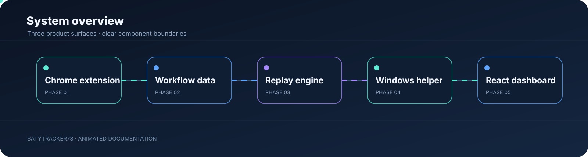
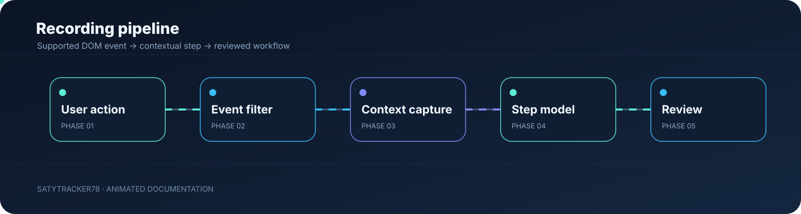
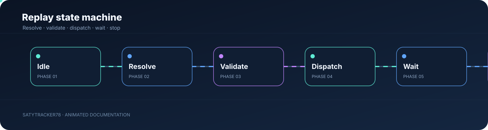
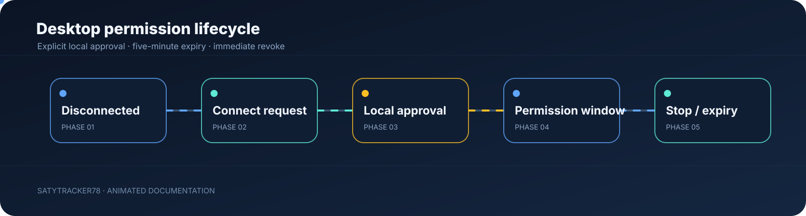
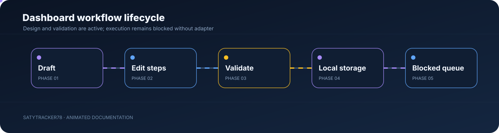
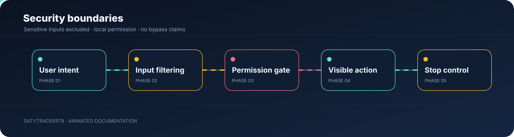
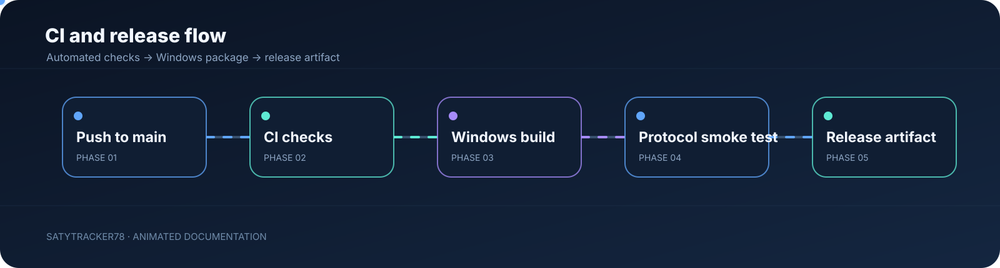

Workflow editor
Create workflows, add steps, choose browser or desktop labels, configure repeat count, delays and stop-on-error.
Explore how SatyTracker78 records supported browser interactions, resolves targets during replay, offers an optional permission-gated Windows companion, and manages workflow definitions in its dashboard.
This interactive mock walkthrough demonstrates the concepts behind the browser replay. It is illustrative, not a live connection to your Chrome extension or a real website.
A saved workflow attempts to resolve this target using its selector and context.
The Windows helper is installed independently and registered as a Chrome Native Messaging host. It does not automatically turn every browser replay action into trusted desktop input.
The React dashboard manages structured workflow definitions and history. It currently does not execute those definitions through the Chrome extension or desktop helper.
Create workflows, add steps, choose browser or desktop labels, configure repeat count, delays and stop-on-error.
Configure CSS, XPath, ID, text, role or test-ID locators, with bounded timeouts and retry counts.
Validate JSON imports, export workflows and run history, and persist data in this browser's local storage.
blocked because no authenticated local execution adapter is connected. Dashboard connection toggles are demonstration UI state, not a real pairing protocol.Seven additional animated diagrams break down the system into focused, readable journeys. Each SVG loops independently; scroll reveals and layered movement are orchestrated with GSAP.

Product surfaces and component boundaries.

Supported event capture and context enrichment.

Target resolution, validation and controlled replay.

Approval, expiry and revocation.

Workflow design, validation and blocked queue.

Input exclusions and permission controls.

Checks, Windows packaging and release artifact.
Clone the repository, open chrome://extensions, enable Developer mode, choose Load unpacked, and select the extension/ folder.
Download and extract the latest successful Windows setup ZIP. Run Setup-SatyTracker78.cmd, paste the extension ID, restart Chrome, and approve local permission only when needed.
Install Node.js 22 or compatible current Node, run npm install, then npm run dev. The dashboard is a separate local web app.
The Windows release link is usable only when the CI workflow has successfully published the release asset. Do not assume an installer is available if the release is empty.
Records supported DOM interactions, not screen video. Password, file-upload, payment-card and one-time-code fields are excluded.
Some protected websites, canvas interfaces, cross-origin frames and apps requiring trusted input may not support synthetic page events.
Upwork, TeamLogger, Time Doctor, Hubstaff, DeskTime, Toggl Track and Clockify adapters are not implemented. Research is documented separately.
Use only on websites, accounts and devices where you have permission. This product does not spoof activity, bypass monitoring, or evade security controls.